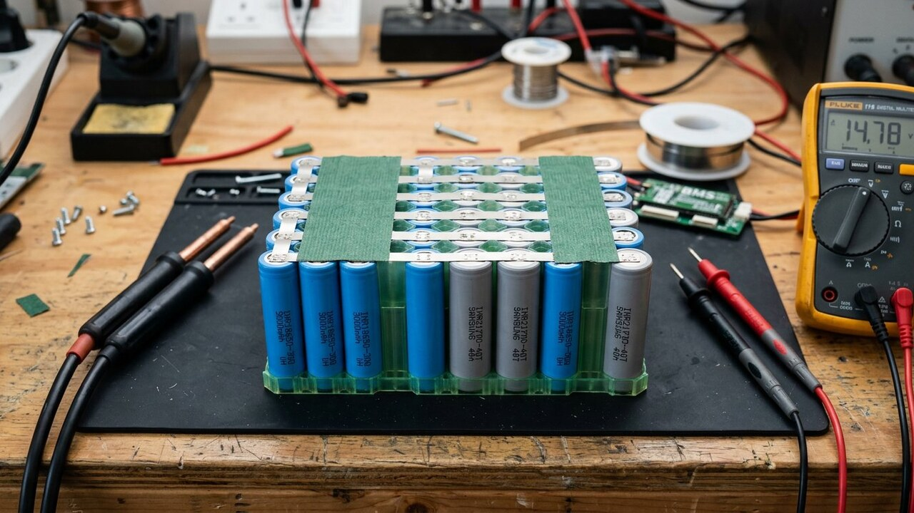

<!DOCTYPE html><html lang="es-CL"><head><meta charset="UTF-8"><meta name="viewport" content="width=device-width,initial-scale=1"><meta name="theme-color" content="#f6f4ee"><title>Cómo Armar un Pack de Baterías 18650 y 21700: Guía de Taller</title><meta name="description" content="Aprende cómo armar un pack de baterías 18650 y 21700: cálculo de tiras de níquel, prueba de níquel puro, aislamiento con fishpaper, soldadura de puntos y BMS."><meta name="keywords" content="como armar pack baterias 18650, pack 21700 litio taller, cinta niquel puro baterias, aislamiento fishpaper litio, conexion serie paralelo bms, spot welder litio"><meta name="author" content="Alberto Gallardo"><meta name="robots" content="index,follow,max-image-preview:large"><link rel="canonical" href="https://www.ukrabot.cl/blog/como-armar-pack-baterias-18650-21700-paso-a-paso/"><meta property="og:type" content="article"><meta property="og:title" content="Cómo Armar un Pack de Baterías 18650 y 21700: Guía de Taller"><meta property="og:description" content="Aprende cómo armar un pack de baterías 18650 y 21700: cálculo de tiras de níquel, prueba de níquel puro, aislamiento con fishpaper, soldadura de puntos y BMS."><meta property="og:image" content="https://www.ukrabot.cl/blog/como-armar-pack-baterias-18650-21700-paso-a-paso-hero.jpg"><meta property="og:url" content="https://www.ukrabot.cl/blog/como-armar-pack-baterias-18650-21700-paso-a-paso/"><meta property="og:locale" content="es_CL"><meta property="og:site_name" content="Blog de Ingeniería Robótica"><meta name="twitter:card" content="summary_large_image"><meta name="twitter:title" content="Cómo Armar un Pack de Baterías 18650 y 21700: Guía de Taller"><meta name="twitter:description" content="Aprende cómo armar un pack de baterías 18650 y 21700: cálculo de tiras de níquel, prueba de níquel puro, aislamiento con fishpaper, soldadura de puntos y BMS."><meta name="twitter:image" content="https://www.ukrabot.cl/blog/como-armar-pack-baterias-18650-21700-paso-a-paso-hero.jpg"><script type="application/ld+json">{"@context":"https://schema.org","@type":"TechArticle","headline":"Cómo Armar un Pack de Baterías 18650 y 21700: Guía de Taller","description":"Aprende cómo armar un pack de baterías 18650 y 21700: cálculo de tiras de níquel, prueba de níquel puro, aislamiento con fishpaper, soldadura de puntos y BMS.","author":{"@type":"Person","name":"Alberto Gallardo","jobTitle":"Analista Programador Computacional","url":"https://www.ukrabot.cl/about"},"publisher":{"@type":"Organization","name":"Blog de Ingeniería Robótica","url":"https://www.ukrabot.cl","logo":{"@type":"ImageObject","url":"https://www.ukrabot.cl/logo.png"}},"datePublished":"2026-08-27","dateModified":"2026-08-27","mainEntityOfPage":{"@type":"WebPage","@id":"https://www.ukrabot.cl/blog/como-armar-pack-baterias-18650-21700-paso-a-paso/"},"image":"https://www.ukrabot.cl/blog/como-armar-pack-baterias-18650-21700-paso-a-paso-hero.jpg","wordCount":5462,"inLanguage":"es-CL","proficiencyLevel":"Intermedio-Avanzado","keywords":"como armar pack baterias 18650, pack 21700 litio taller, cinta niquel puro baterias, aislamiento fishpaper litio, conexion serie paralelo bms, spot welder litio"}</script><script type="application/ld+json">{"@context":"https://schema.org","@type":"BreadcrumbList","itemListElement":[{"@type":"ListItem","position":1,"name":"Inicio","item":"https://www.ukrabot.cl/"},{"@type":"ListItem","position":2,"name":"Blog","item":"https://www.ukrabot.cl/blog/"},{"@type":"ListItem","position":3,"name":"Cómo Armar un Pack de Baterías 18650 y 21700: Guía de Taller","item":"https://www.ukrabot.cl/blog/como-armar-pack-baterias-18650-21700-paso-a-paso/"}]}</script><script type="application/ld+json">{"@context":"https://schema.org","@type":"FAQPage","mainEntity":[{"@type": "Question", "name": "¿Por qué está estrictamente prohibido soldar celdas de litio con cautín y estaño?", "acceptedAnswer": {"@type": "Answer", "text": "El polo positivo de una celda cilíndrica 18650 o 21700 contiene una junta de sellado elastomérica sensible a 120 °C y una válvula de seguridad CID (Current Interrupt Device). Además, el separador polimérico microporoso interno (polietileno/polipropileno) que aísla el ánodo del cátodo se degrada y contrae a temperaturas superiores a 130 °C. El calor continuo de un cautín penetra en el interior del electrodo en menos de un segundo, creando micro-cortocircuitos latentes que pueden derivar en fuga térmica (thermal runaway) e incendio semanas después. La soldadura por puntos por descarga capacitiva o resistencia concentra la energía en 5 a 15 milisegundos, soldando el metal sin transferir calor al núcleo químico."}}, {"@type": "Question", "name": "¿Cómo puedo comprobar si una tira de níquel es níquel puro al 99,6 % o acero niquelado barato?", "acceptedAnswer": {"@type": "Answer", "text": "Mediante dos pruebas rápidas de taller: (1) Prueba de chispas en esmeril de banco: el acero niquelado produce chispas densas y ramificadas de color naranja brillante con estrellas terminales, mientras que el níquel puro no genera chispas o apenas emite chispas lineales muy cortas y oscuras de color rojo opaco; (2) Prueba química corrosiva: sumerge una muestra raspada en ácido muriático (HCl al 10 %) o cloruro férrico durante 30 minutos; el acero se oxidará rápidamente generando herrumbre marrón y burbujas, mientras que el níquel puro resistirá el ataque químico manteniendo su brillo metálico intacto."}}, {"@type": "Question", "name": "¿Qué corriente continua puede soportar con seguridad una tira de níquel puro de 0,15 × 8 mm?", "acceptedAnswer": {"@type": "Answer", "text": "Bajo una densidad de corriente de ingeniería conservadora de 5 A/mm² (para mantener la elevación térmica por debajo de 10 °C sobre ambiente), una tira simple de 0,15 mm × 8 mm (sección de 1,20 mm²) soporta hasta 6 A de corriente continua. Para corrientes mayores (por ejemplo 15 A a 25 A en un pack de scooter o robot pesado), se deben apilar dos tiras en paralelo formando una bicapa soldada o utilizar tiras de níquel de mayor espesor (0,20 mm × 10 mm) reforzadas con alambre de cobre estañado de 12 AWG soldado sobre las tiras de interconexión."}}, {"@type": "Question", "name": "¿Por qué es obligatorio instalar anillos aislantes autoadhesivos en el polo positivo de cada celda?", "acceptedAnswer": {"@type": "Answer", "text": "En las celdas cilíndricas 18650 y 21700, todo el cilindro metálico exterior (la carcasa completa) es el polo negativo (GND). En la parte superior, el polo positivo está separado del borde negativo por una ranura anular de apenas 1,5 a 2 milímetros de ancho, cubierta únicamente por la delgada envoltura plástica termocontraíble de fábrica (PVC de 0,08 mm). Si la tira de níquel vibra, roza o presiona sobre ese hombro durante el uso, perforará el plástico y provocará un cortocircuito directo entre positivo y negativo capaz de fundir la tira y desatar fuego. El anillo de papel de cebada (Fishpaper) añade una barrera dieléctrica ignífuga rígida impenetrable."}}, {"@type": "Question", "name": "¿Cuál es el orden estricto para conectar los cables de balanceo de un BMS a un pack nuevo?", "acceptedAnswer": {"@type": "Answer", "text": "El protocolo de seguridad exige: (1) Soldar primero el cable principal de potencia B- del BMS al borne negativo global del pack; (2) Conectar los cables delgados del arnés de balanceo comenzando siempre por B0 (negativo global) y avanzando secuencialmente en orden ascendente: B1, B2, B3... hasta B_final (positivo global), con el conector blanco DESCONECTADO de la placa BMS; (3) Medir con un multímetro digital entre pines adyacentes del conector hembra para verificar que cada celda mida exactamente entre 3,5 V y 4,2 V y que el voltaje acumulado ascienda coherentemente sin polaridades invertidas; (4) Insertar firmemente el conector de balanceo en la placa BMS; (5) Soldar finalmente la salida de carga/descarga P- y C-."}}, {"@type": "Question", "name": "¿Qué diferencia de voltaje inicial se tolera entre celdas antes de conectarlas en paralelo?", "acceptedAnswer": {"@type": "Answer", "text": "La diferencia de voltaje entre celdas individuales antes de soldarlas en paralelo no debe superar los 10 a 20 milivoltios (0,01 a 0,02 V). Si conectas en paralelo una celda a 4,15 V con otra a 3,60 V, la resistencia interna extremadamente baja de las celdas (15 a 30 mΩ) provocará una corriente de compensación instantánea superior a 15 o 20 amperios, sobrecalentando los electrodos internos y pudiendo fundir las pestañas de níquel. Antes de armar el pack, carga todas las celdas individualmente a un voltaje idéntico (por ejemplo 3,65 V) y déjalas reposar 24 horas para estabilizar su potencial."}}]}</script><link rel="preconnect" href="https://fonts.googleapis.com"><link rel="preconnect" href="https://fonts.gstatic.com" crossorigin><link href="https://fonts.googleapis.com/css2?family=DM+Serif+Display&family=Inter:wght@300;400;500;600;700&display=swap" rel="stylesheet"><style>:root{--ink:#f6f4ee;--card:#fff;--text:#1e1b15;--muted:#57534a;--quiet:#8b8577;--gold:#a97b23;--gold-bright:#e4c07a;--blue:#2f6fb0;--line:rgba(30,25,15,.09)}*{box-sizing:border-box}html{scroll-behavior:smooth}body{margin:0;background:var(--ink);color:var(--text);font-family:Inter,system-ui,-apple-system,Segoe UI,sans-serif;line-height:1.7;overflow-x:hidden}img{max-width:100%;height:auto}a{color:var(--blue);text-underline-offset:3px}.container{max-width:1050px;margin:auto;padding:0 24px}.site-nav{position:sticky;top:0;z-index:50;background:rgba(246,244,238,.95);backdrop-filter:blur(12px);border-bottom:1px solid var(--line)}.nav-inner{position:relative;display:flex;justify-content:space-between;align-items:center;padding:16px 24px;max-width:1050px;margin:auto;gap:12px}.logo{color:var(--text);text-decoration:none;font-family:Georgia,serif;font-size:1.35rem;flex-shrink:0}.logo span{color:var(--gold);font-style:italic}.nav-links{display:flex;gap:20px;font-size:.86rem}.nav-links a{color:var(--muted);text-decoration:none;white-space:nowrap}.nav-toggle{display:none;flex-direction:column;justify-content:center;gap:5px;width:38px;height:38px;background:none;border:1px solid var(--line);border-radius:8px;cursor:pointer}.nav-toggle span{display:block;width:18px;height:2px;background:var(--text);margin:auto}.progress-bar{position:fixed;top:0;left:0;height:3px;background:linear-gradient(90deg,var(--gold),var(--blue));z-index:300}.hero{position:relative;min-height:54vh;display:flex;align-items:end;overflow:hidden;background:#151310}.hero>img{position:absolute;inset:0;width:100%;height:100%;object-fit:cover;filter:brightness(.5) contrast(1.08)}.hero:after{content:"";position:absolute;inset:0;background:linear-gradient(180deg,rgba(18,15,11,.3),rgba(18,15,11,.9))}.hero-inner{position:relative;z-index:2;padding:100px 24px 70px;width:100%;max-width:1050px;margin:auto}.eyebrow{color:var(--gold-bright);font-size:.76rem;letter-spacing:.13em;text-transform:uppercase;font-weight:700}.hero h1{font-family:Georgia,serif;font-size:clamp(2rem,6vw,4.2rem);line-height:1.08;font-weight:400;max-width:930px;margin:18px 0;color:#fff}.hero p{color:rgba(245,243,238,.8);max-width:760px;font-size:1.05rem}.byline{font-size:.85rem!important;color:rgba(245,243,238,.58)!important}.byline a{color:var(--gold-bright)}.article-body{padding-top:64px;padding-bottom:90px}.article-body section{scroll-margin-top:80px}.article-body h2{font-family:Georgia,serif;font-size:2rem;font-weight:400;line-height:1.2;margin:58px 0 16px}.article-body p,.article-body li{color:var(--muted)}.article-body p{margin:0 0 20px}.article-body li{margin:8px 0}.article-body strong{color:var(--text)}.toc,.note,.cta{background:linear-gradient(135deg,rgba(169,123,35,.08),rgba(47,111,176,.06));border:1px solid var(--line);border-radius:14px;padding:24px;margin:28px 0}.toc h2{font-family:inherit;font-size:1.05rem;margin:0 0 10px}.toc ol{margin:0;padding-left:22px}.toc a{color:var(--muted);text-decoration:none}.note{border-left:4px solid var(--gold)}.warning{background:rgba(178,40,30,.06);border:1px solid rgba(178,40,30,.25);border-left:4px solid #b2281e;border-radius:14px;padding:24px;margin:28px 0;color:var(--muted)}.article-img{margin:0 0 42px;border:1px solid var(--line);border-radius:14px;overflow:hidden}.article-img img{width:100%;display:block}.caption{padding:12px 16px;background:var(--card);color:var(--quiet);font-size:.82rem}.table-wrap{overflow-x:auto;border:1px solid var(--line);border-radius:12px;margin:22px 0}table{border-collapse:collapse;width:100%;min-width:650px;background:var(--card)}th,td{text-align:left;padding:13px 14px;border-bottom:1px solid var(--line);color:var(--muted)}th{background:#faf7f0;color:var(--text);font-size:.78rem;text-transform:uppercase;letter-spacing:.06em}td:first-child{color:var(--text);font-weight:600}pre{background:#14121a;border:1px solid rgba(255,255,255,.08);border-radius:12px;padding:20px;color:#e8d9b6;overflow-x:auto;font-size:.88rem;line-height:1.5}code{font-family:ui-monospace,SFMono-Regular,Consolas,monospace}.faq details{border-top:1px solid var(--line);padding:16px 0}.faq summary{cursor:pointer;font-weight:600;color:var(--text)}.faq p{padding-top:10px;margin:0}.sources{padding:48px 0;border-top:1px solid var(--line);color:var(--muted)}.sources h2{font-family:Georgia,serif;font-size:1.6rem;font-weight:400;margin-bottom:16px;color:var(--text)}.sources ul{padding-left:20px}.sources li{margin:8px 0}.disclosure{font-size:.78rem;color:var(--quiet);border-top:1px solid var(--line);padding-top:16px;margin-top:34px}.cta h3{margin:0 0 8px;font-size:1.05rem;color:var(--text)}.cta p{margin:0}.site-footer{padding:40px 24px;border-top:1px solid var(--line);font-size:.85rem;color:var(--quiet)}.site-footer a{color:var(--muted)}@media(max-width:760px){.nav-toggle{display:flex}.nav-links{position:absolute;top:100%;left:0;right:0;flex-direction:column;align-items:flex-start;gap:2px;background:rgba(246,244,238,.98);backdrop-filter:blur(12px);border-bottom:1px solid var(--line);padding:8px 24px 18px;display:none}.nav-links.open{display:flex}.nav-links a{padding:10px 0;width:100%}}@media(max-width:700px){.hero-inner{padding:80px 20px 50px}.article-body h2{font-size:1.6rem;margin:44px 0 14px}.article-body{padding-top:48px;padding-bottom:60px}}</style><script>window.dataLayer=window.dataLayer||[];function gtag(){dataLayer.push(arguments);}gtag('consent','default',{'ad_storage':'denied','ad_user_data':'denied','ad_personalization':'denied','analytics_storage':'denied','wait_for_update':500});(function(){try{var c=document.cookie.match(/(?:^|;\s*)rel_consent=([^;]+)/);if(c&&c[1]==='granted'){gtag('consent','update',{'ad_storage':'granted','ad_user_data':'granted','ad_personalization':'granted','analytics_storage':'granted'});}}catch(e){}})();</script><script async src="https://pagead2.googlesyndication.com/pagead/js/adsbygoogle.js?client=ca-pub-7032484018692343" crossorigin="anonymous"></script><script async src="https://www.googletagmanager.com/gtag/js?id=G-1ZVHF8X35Q"></script><script>window.dataLayer=window.dataLayer||[];function gtag(){dataLayer.push(arguments);}gtag('js',new Date());gtag('config','G-1ZVHF8X35Q');</script></head><body><div class="progress-bar" id="progress-bar" aria-hidden="true"></div><nav class="site-nav" aria-label="Navegación del sitio"><div class="nav-inner"><a class="logo" href="/">Robótica <span>Ingeniería</span></a><button class="nav-toggle" id="nav-toggle" aria-expanded="false" aria-controls="nav-links" aria-label="Abrir menú de navegación"><span></span><span></span><span></span></button><div class="nav-links" id="nav-links"><a href="/">Inicio</a><a href="/#categories">Tutoriales</a><a href="/#proyecto-destacado">Proyecto del Mes</a><a href="/about">Sobre Nosotros</a><a href="/contact">Contacto</a></div></div></nav><header class="hero"><div class="hero-inner"><div class="eyebrow">Baterías y Reparación Electrónica · Actualizado el <time datetime="2026-08-27">27 de agosto de 2026</time></div><h1>Cómo Armar un Pack de Baterías 18650 y 21700: Guía de Taller</h1><p>Aprende a calcular la sección y ampacidad de tiras de níquel, verificar pureza con reactivos químicos, colocar aislantes dieléctricos y soldar por puntos con BMS seguro.</p><p class="byline">Por <a href="/about">Alberto Gallardo</a>, Analista Programador Computacional · 23 min de lectura</p></div></header><main class="container article-body"><article>
<div class="toc" aria-label="Tabla de contenidos">
  <h2>Qué cubre esta guía</h2>
  <ol>
    <li><a href="#dimensionamiento-pack">Dimensionamiento del pack: topología serie y paralelo (S/P) y balance de capacidad</a></li>
    <li><a href="#materiales-criticos">Materiales críticos: celdas emparejadas por IR, espaciadores modulares y dieléctricos</a></li>
    <li><a href="#tiras-niquel">Tiras de níquel: cálculo de sección, ampacidad real y peligro del acero niquelado</a></li>
    <li><a href="#pruebas-laboratorio">Pruebas de laboratorio en taller: test químico con cloruro férrico y prueba de chispas</a></li>
    <li><a href="#aislamiento-dielectrico">Aislamiento dieléctrico de alta tensión: anillos de ánodo, papel cebada (Fishpaper) y cinta Kapton</a></li>
    <li><a href="#soldadura-puntos">Soldadura por puntos (Spot Welding): parámetros de energía en Joules, pulsos y presión de electrodos</a></li>
    <li><a href="#integracion-bms">Integración del BMS (Battery Management System): orden estricto de cableado y balanceo</a></li>
    <li><a href="#protecciones-fusibles">Protecciones complementarias: fusibles en línea, conectores antichispa XT90-S y termocontraíble</a></li>
    <li><a href="#protocolo-pruebas">Protocolo de pruebas de puesta en marcha: carga controlada, descarga a 1C y termografía</a></li>
    <li><a href="#matriz-fallas">Matriz de fallas y errores críticos en el banco de ensamblaje</a></li>
    <li><a href="#costos-chile">Presupuesto de materiales y herramientas en Chile (CLP 2026)</a></li>
    <li><a href="#faq">Preguntas frecuentes</a></li>
    <li><a href="#fuentes">Fuentes primarias y lecturas recomendadas</a></li>
  </ol>
</div>

<div class="ad-slot" style="margin:34px 0;min-height:280px;text-align:center;">
  <!-- ANUNCIO UKRABOT -->
  <ins class="adsbygoogle"
       style="display:block"
       data-ad-client="ca-pub-7032484018692343"
       data-ad-slot="7434550690"
       data-ad-format="auto"
       data-full-width-responsive="true"></ins>
  <script>(adsbygoogle = window.adsbygoogle || []).push({});</script>
</div>

<section id="dimensionamiento-pack">
<h2>Dimensionamiento del pack: topología serie y paralelo (S/P) y balance de capacidad</h2>
<p>El ensamblaje artesanal o semi-industrial de paquetes de baterías recargables basadas en celdas cilíndricas de iones de litio (formatos estándares <strong>18650</strong> de 18 mm × 65 mm y <strong>21700</strong> de 21 mm × 70 mm) es una competencia indispensable en robótica móvil pesada, vehículos de micromovilidad eléctrica (scooters, bicicletas asistidas, karts), almacenamiento fotovoltaico autónomo y herramientas inalámbricas de taller. Sin embargo, armar un pack no consiste simplemente en juntar celdas con cinta adhesiva: requiere un cálculo electroquímico riguroso para definir la arquitectura en serie y paralelo ($n	ext{S}m	ext{P}$), calcular la energía útil en vatios-hora y asegurar que las corrientes de descarga no excedan las especificaciones térmicas de las celdas.</p>

<p>La topología del pack se define mediante dos parámetros enteros fundamentales:</p>

<ul>
<li><strong>Configuración en Serie ($n	ext{S}$):</strong> Determina el voltaje nominal y los voltajes de corte del pack. Las celdas conectadas extremo a extremo suman su diferencia de potencial manteniendo la misma capacidad en amperios-hora (Ah). Para una química de Níquel-Manganeso-Cobalto (NMC) con voltaje nominal de 3,6 V por celda (rango operativo de 3,0 V descargada a 4,2 V plenamente cargada), el voltaje nominal total es $V_{	ext{pack}} = n 	imes 3,6\,	ext{V}$. Por ejemplo, una configuración <strong>10S</strong> genera $36,0\,	ext{V}$ nominales ($42,0\,	ext{V}$ de carga máxima y $30,0\,	ext{V}$ de corte inferior), mientras que una <strong>13S</strong> entrega $46,8\,	ext{V}$ nominales ($54,6\,	ext{V}$ máx) para sistemas comúnmente comercializados como "48 V".</li>
<li><strong>Configuración en Paralelo ($m	ext{P}$):</strong> Determina la capacidad total de almacenamiento de carga eléctrica y la capacidad de entrega de corriente continua sin sobrecalentamiento. Los grupos de celdas conectadas en paralelo suman sus capacidades ($C_{	ext{pack}} = m 	imes C_{	ext{celda}}$) y dividen la corriente de demanda entre $m$ ramas ($I_{	ext{rama}} = I_{	ext{total}} / m$).</li>
</ul>

<div class="table-wrap">
<table>
<thead><tr><th>Topología S/P</th><th>Voltaje Nominal / Máximo</th><th>Capacidad Típica (con celdas de 3.000 mAh)</th><th>Energía Almacenada ($E = V 	imes C$)</th><th>Aplicación Típica en Chile</th></tr></thead>
<tbody>
<tr><td><strong>3S2P</strong> (6 celdas 18650)</td><td>10,8 V nom. / 12,6 V máx.</td><td>6,0 Ah (6.000 mAh)</td><td>64,8 Wh</td><td>Alimentación de robots Arduino, brazos robóticos pequeños, routers UPS.</td></tr>
<tr><td><strong>5S1P</strong> (5 celdas 18650)</td><td>18,0 V nom. / 21,0 V máx.</td><td>3,0 Ah (3.000 mAh)</td><td>54,0 Wh</td><td>Baterías de reemplazo para taladros percutores inalámbricos de 18 V.</td></tr>
<tr><td><strong>10S3P</strong> (30 celdas 18650)</td><td>36,0 V nom. / 42,0 V máx.</td><td>9,0 Ah (9.000 mAh)</td><td>324,0 Wh</td><td>Packs para scooters eléctricos urbanos tipo Xiaomi M365 y similares.</td></tr>
<tr><td><strong>13S4P</strong> (52 celdas 21700)</td><td>46,8 V nom. / 54,6 V máx.</td><td>16,0 Ah (con 21700 de 4.000 mAh)</td><td>748,8 Wh</td><td>Bicicletas eléctricas de alta potencia (500 W a 1.000 W) y robots de exploración.</td></tr>
</tbody>
</table>
</div>

<p>Para determinar la energía total utilizable del sistema en vatios-hora (Wh), se aplica la ecuación electroquímica fundamental:</p>

<pre><code>E_pack (Wh) = V_nominal (V) × C_nominal (Ah) = (n × 3,6 V) × (m × C_celda)</code></pre>

<p>Es imprescindible comprobar que la corriente continua máxima exigida por el motor o controlador ($I_{	ext{carga(max)}}$) no supere la corriente máxima de descarga continua especificada en el datasheet de la celda ($I_{	ext{CDR}}$) multiplicada por el número de ramas en paralelo: $I_{	ext{pack(max)}} = m 	imes I_{	ext{CDR}}$. Si un motor BLDC de scooter exige 25 A continuos y armamos un pack 10S2P con celdas de uso genérico de linterna cuya $I_{	ext{CDR}}$ es de apenas 5 A ($2 	imes 5\,	ext{A} = 10\,	ext{A}$ máx), el pack sufrirá una elevación térmica extrema superior a 75 °C, degradación acelerada y colapso de voltaje (<em>voltage sag</em>).</p>
</section>

<section id="materiales-criticos">
<h2>Materiales críticos: celdas emparejadas por IR, espaciadores modulares y dieléctricos</h2>
<p>La calidad y longevidad de un pack de baterías dependen de la homogeneidad de sus componentes. En un pack en serie, <strong>la celda más débil determina la capacidad y la seguridad de todo el conjunto</strong>. Si una sola celda posee una resistencia interna (IR) más elevada que sus compañeras, se calentará más rápido durante la descarga, alcanzará el corte por bajo voltaje (3,0 V) prematuramente y forzará al BMS a cortar el suministro antes de que las demás celdas hayan entregado su energía útil.</p>

<div class="table-wrap">
<table>
<thead><tr><th>Componente de Construcción</th><th>Especificación Técnica Requerida</th><th>Función Crítica de Ingeniería</th></tr></thead>
<tbody>
<tr><td>Celdas 18650 / 21700 Grado A</td><td>Mismo lote de fabricación, delta de capacidad &lt; 1,5 %, delta de IR &lt; 2 mΩ</td><td>Garantiza balanceo pasivo estable y descarga térmica uniforme.</td></tr>
<tr><td>Espaciadores plásticos celulares</td><td>Plástico ABS/PC ignífugo (Grado UL94-V0) con encastre machihembrado</td><td>Mantiene separación de 1,5 mm entre cuerpos metálicos y disipa calor convectivo.</td></tr>
<tr><td>Anillos aislantes de polo positivo</td><td>Papel de cebada vulcanizado (Fishpaper) o fibra de aramida con adhesivo térmico</td><td>Protege la ranura anular del cátodo contra rozamiento y perforación por tiras de níquel.</td></tr>
<tr><td>Papel Fishpaper aislante (lámina)</td><td>Espesor 0,20 mm a 0,35 mm, rigidez dieléctrica &gt; 4 kV/mm</td><td>Aísla grupos serie adyacentes con diferencia de potencial superior a 20 V.</td></tr>
<tr><td>Cinta de poliamida (Kapton)</td><td>Resistente hasta 260 °C, adhesivo de silicona libre de residuo</td><td>Fijación mecánica de sensores de temperatura NTC y cableado de balanceo.</td></tr>
<tr><td>Tiras de interconexión</td><td><strong>Níquel Puro al 99,6 % (Grado Ni200 / UNS N02200)</strong></td><td>Baja resistividad, conductividad térmica y resistencia a la corrosión galvánica.</td></tr>
</tbody>
</table>
</div>

<p>En el mercado informal abundan celdas recicladas o falsificadas provenientes de baterías desechadas de computadores portátiles. Como se analiza en nuestra <a href="/blog/como-elegir-celdas-18650-y-21700-sin-caer-en-falsificaciones">guía para elegir celdas 18650 y 21700 sin caer en falsificaciones</a>, es obligatorio medir la resistencia interna de cada celda con un probador de corriente alterna de 1 kHz (como el instrumento de precisión YR1035+) antes de iniciar el armado. Para celdas de alta descarga como las Samsung 25R, Sony VTC6 o <a href="/blog/baterias-li-ion-21700-samsung-40t-potencia-para-maker">Samsung 40T 21700</a>, la resistencia interna debe situarse estrictamente entre <strong>10 mΩ y 15 mΩ</strong> a 20 °C.</p>

<div class="warning">
<strong>Peligro estructural sin espaciadores:</strong> Nunca pegues los cilindros metálicos de las celdas entre sí directamente con silicona caliente (hot-melt) sin utilizar espaciadores plásticos celulares modulares. La silicona actúa como un aislante térmico que atrapa el calor en el núcleo del pack impidiendo el enfriamiento por aire, y ante cualquier vibración mecánica severa, el roce continuo entre las carcasas metálicas (que están al potencial negativo GND) desgastará el envoltorio plástico de PVC provocando un cortocircuito masivo e incontrolable.
</div>
</section>

<section id="tiras-niquel">
<h2>Tiras de níquel: cálculo de sección, ampacidad real y peligro del acero niquelado</h2>
<p>El elemento conductor que transporta toda la corriente eléctrica entre las celdas es la tira de interconexión metálica (busbar). En la industria del ensamblaje de baterías, el material estándar por excelencia es el <strong>Níquel Puro Grado Comercial Ni200 (99,6 % de pureza)</strong>, valorado por su excelente conductividad eléctrica ($pprox 14,3 	imes 10^6\,	ext{S/m}$), resistencia a la oxidación ambiental y plasticidad para la soldadura por puntos.</p>

<p>Sin embargo, el mercado asiático de bajo costo está inundado de tiras fraudulentas fabricadas en <strong>chapa de acero al carbono común con un baño electrolítico superficial de níquel de apenas 1 a 3 micrómetros</strong> (conocido en inglés como <em>Nickel-Plated Steel Strip</em>). El acero posee una resistividad eléctrica entre 4 y 6 veces mayor que el níquel puro ($15 	imes 10^{-8}\,\Omega\cdot	ext{m}$ frente a $6,9 	imes 10^{-8}\,\Omega\cdot	ext{m}$). Si utilizas acero niquelado en un pack de alta corriente, la ley de Joule ($P = I^2 	imes R$) transformará las tiras en resistencias calefactoras, provocando caídas de tensión masivas, sobrecalentando los terminales de las celdas y acelerando el riesgo de fuga térmica.</p>

<div class="table-wrap">
<table>
<thead><tr><th>Espesor × Ancho de la Tira</th><th>Sección Transversal ($A = e 	imes w$)</th><th>Corriente Continua Segura (Níquel Puro @ $5\,	ext{A/mm}^2$)</th><th>Corriente Pico (10 s) Níquel Puro</th><th>Comportamiento con Acero Niquelado</th></tr></thead>
<tbody>
<tr><td><strong>0,10 mm × 6 mm</strong></td><td>0,60 mm²</td><td>3,0 A</td><td>6,0 A</td><td>Peligro de sobrecalentamiento sobre 2 A; no recomendado.</td></tr>
<tr><td><strong>0,15 mm × 8 mm</strong> (Estándar 18650)</td><td>1,20 mm²</td><td>6,0 A</td><td>12,0 A</td><td>Se calienta a &gt; 65 °C con solo 7 A continuos.</td></tr>
<tr><td><strong>0,15 mm × 10 mm</strong></td><td>1,50 mm²</td><td>7,5 A</td><td>15,0 A</td><td>Caída de voltaje de hasta 0,8 V bajo carga moderada.</td></tr>
<tr><td><strong>0,20 mm × 8 mm</strong></td><td>1,60 mm²</td><td>8,0 A</td><td>16,0 A</td><td>Requiere spot welders potentes (&gt; 50 J) para soldar.</td></tr>
<tr><td><strong>0,20 mm × 10 mm</strong> (Estándar 21700)</td><td>2,00 mm²</td><td>10,0 A</td><td>20,0 A</td><td>Ideal para packs de movilidad; requiere níquel 99,6 % certificado.</td></tr>
<tr><td><strong>Bicapa 0,15 mm × 8 mm</strong> (2 tiras superpuestas)</td><td>2,40 mm²</td><td>12,0 A</td><td>24,0 A</td><td>Técnica recomendada para reforzar puentes serie en packs potentes.</td></tr>
</tbody>
</table>
</div>

<p>Para calcular la sección transversal requerida en las barras colectoras principales que unen los grupos serie, se aplica la fórmula de densidad de corriente admisible ($J$):</p>

<pre><code>Sección mínima A (mm²) = Corriente Máxima Continua I (A) / Densidad Admisible J (A/mm²)</code></pre>

<p>Adoptando una densidad de corriente conservadora de $J = 5\,	ext{A/mm}^2$ para evitar elevaciones de temperatura superiores a 10 °C dentro del pack hermético, si un motor exige 30 A continuos del pack, la sección total de interconexión en los polos principales debe ser de al menos $30\,	ext{A} / 5\,	ext{A/mm}^2 = 6,0\,	ext{mm}^2$. Esto se logra soldando 5 tiras de níquel de $0,15 	imes 8\,	ext{mm}$ en paralelo o complementando la tira de níquel con un conductor de cobre macizo estañado de 10 AWG soldado directamente sobre el lomo de la tira entre los puntos de soldadura.</p>
</section>

<section id="pruebas-laboratorio">
<h2>Pruebas de laboratorio en taller: test químico con cloruro férrico y prueba de chispas</h2>
<p>Antes de soldar un solo centímetro de tira de níquel en un pack de celdas nuevas, es mandatorio realizar dos pruebas físicas destructivas de bajo costo para verificar que el material recibido sea 100 % níquel puro y no acero niquelado fraudulento:</p>

<h3>1. Prueba de chispas en esmeril de banco o amoladora angular</h3>
<p>Sujeta un trozo de 5 cm de la tira de níquel con un alicate de presión y acércala firmemente contra la piedra abrasiva de grano fino de un esmeril de banco en rotación en una zona oscura del taller:</p>

<ul>
<li><strong>Acero niquelado (Falsificación común):</strong> Al hacer contacto con la piedra abrasiva, se proyecta una lluvia densa y brillante de chispas de color <strong>naranja brillante con ramificaciones y estrellas explosivas</strong> en el extremo de los trazos (típico del carbono presente en el acero).</li>
<li><strong>Níquel Puro Ni200 (Genuino):</strong> El níquel puro prácticamente <strong>no genera chispas</strong>. Si se aplica mucha presión, apenas se desprenden unos pocos trazos rectilíneos muy cortos, tenues y oscuros de color <strong>rojo opaco sin ninguna ramificación</strong> ni chispa secundaria.</li>
</ul>

<h3>2. Prueba química de corrosión ácida con Cloruro Férrico o Ácido Clorhídrico</h3>
<p>Raspa profundamente la superficie de la tira de níquel con una lima metálica para exponer el núcleo interior (eliminando cualquier recubrimiento electrolítico superficial) y sumérgela en un recipiente de vidrio con solución de cloruro férrico (utilizado para atacar placas de PCB) o ácido muriático diluido (HCl al 10 %) durante 30 a 45 minutos:</p>

<ul>
<li><strong>Acero niquelado:</strong> El ácido penetra por las grietas del raspado y reacciona con violencia desprendiendo burbujas de hidrógeno. En menos de 20 minutos el líquido toma un tinte marrón-verdoso y la tira se corroe intensamente, dejando al descubierto herrumbre de óxido de hierro.</li>
<li><strong>Níquel Puro:</strong> El níquel posee una resistencia química extraordinaria a la corrosión ácida pasiva. Tras 45 minutos sumergido, la tira se extrae con una pinza, se enjuaga con agua corriente y su metal se mantiene completamente plateado, pulido y sin picaduras de corrosión.</li>
</ul>

<div class="note">
<strong>Anécdota ilustrativa de taller:</strong> En nuestro laboratorio en San Miguel (Santiago de Chile), durante la fabricación de una batería 10S4P de 36 V y 14 Ah para un robot móvil de telepresencia, registramos una temperatura anormal de 84 °C en los puentes serie tras solo 12 minutos de prueba de esfuerzo a 20 A constantes. Al retirar el termocontraíble y someter las tiras de níquel compradas en un marketplace al test de esmeril, saltaron intensas chispas ramificadas de acero. Al medir la resistencia eléctrica de un metro de dicha tira en cuatro puntas con un micro-ohmímetro, arrojó una resistencia de 0,185 Ω frente a los 0,042 Ω de una tira genuina de níquel puro $Ni200$. Ese diferencial de resistencia generaba una caída parásita de 1,4 V y disipaba más de 28 W de calor inútil dentro del pack cerrado. Tras sustituir todas las barras colectoras por tiras de níquel puro con certificación de pureza del 99,6 % y soldadura escalonada, la temperatura del pack bajo 20 A constantes no superó los 35 °C a una temperatura ambiente de 21 °C.
</div>
</section>

<div class="ad-slot" style="margin:34px 0;min-height:280px;text-align:center;">
  <!-- ANUNCIO UKRABOT -->
  <ins class="adsbygoogle"
       style="display:block"
       data-ad-client="ca-pub-7032484018692343"
       data-ad-slot="7434550690"
       data-ad-format="auto"
       data-full-width-responsive="true"></ins>
  <script>(adsbygoogle = window.adsbygoogle || []).push({});</script>
</div>

<section id="aislamiento-dielectrico">
<h2>Aislamiento dieléctrico de alta tensión: anillos de ánodo, papel cebada (Fishpaper) y cinta Kapton</h2>
<p>La seguridad de un pack de baterías de litio depende de la robustez de sus barreras dieléctricas mecánicas. En una celda 18650 o 21700 convencional, <strong>el polo positivo (ánodo superior) está rodeado por el borde de la carcasa negativa metálica a una distancia de apenas 1,5 a 2 milímetros</strong>. Toda la separación eléctrica de fábrica consiste en una delgadísima envoltura termocontraíble de PVC de 0,08 mm de espesor que recubre el hombro superior de la celda.</p>

<p>Durante la vibración mecánica cotidiana de un vehículo o robot, si la tira de níquel roza repetidamente contra el borde del hombro de la celda, desgastará la película de PVC en pocas semanas. Cuando la tira positiva toque el borde de la carcasa negativa, se producirá un <strong>cortocircuito franco de corriente ilimitada</strong> que calentará el níquel al rojo vivo en milisegundos, perforará la celda y provocará una fuga térmica incontrolable.</p>

<div class="table-wrap">
<table>
<thead><tr><th>Ubicación en el Pack</th><th>Material Dieléctrico Obligatorio</th><th>Procedimiento Correcto de Instalación</th></tr></thead>
<tbody>
<tr><td>Polo positivo superior de cada celda</td><td>Anillos autoadhesivos de papel de cebada (Fishpaper)</td><td>Pegar concéntricamente sobre el botón positivo antes de colocar las celdas en los espaciadores.</td></tr>
<tr><td>Separación entre grupos serie adyacentes</td><td>Pliegos de papel Fishpaper de 0,25 mm cortados a medida</td><td>Intercalar verticalmente entre columnas de celdas con diferencia de potencial mayor a 7,2 V.</td></tr>
<tr><td>Fijación del sensor de temperatura (NTC)</td><td>Cinta de poliamida (Kapton) de 15 mm</td><td>Adherir el termistor NTC en el centro térmico geométrico del pack (la celda más caliente).</td></tr>
<tr><td>Envoltorio exterior del pack completo</td><td>Caja rígida de fibra de vidrio / Funda termocontraíble PVC azul</td><td>Calentar con pistola de calor a 120 °C desde el centro hacia los extremos sin sobrecalentar celdas.</td></tr>
</tbody>
</table>
</div>

<p>El <strong>papel de cebada vulcanizado (Fishpaper)</strong> es el estándar indiscutible de la industria electrotécnica: combina una rigidez dieléctrica superior a $4.000\,	ext{V/mm}$, excelente resistencia al desgarro mecánico y propiedades de autoextinción térmica, impidiendo que una chispa o un arco eléctrico perfore hacia celdas adyacentes.</p>
</section>

<section id="soldadura-puntos">
<h2>Soldadura por puntos (Spot Welding): parámetros de energía en Joules, pulsos y presión de electrodos</h2>
<p>La soldadura por puntos por resistencia eléctrica (CD Spot Welding) es el único método técnicamente admisible y seguro para unir tiras de níquel a celdas de litio. Como se detalla en nuestra <a href="/blog/soldadura-por-puntos-guia-de-compra-y-uso-del-spot-welder">guía completa de compra y uso del Spot Welder</a>, el principio físico consiste en descargar una corriente masiva (de 600 A a 1.500 A) a través de dos electrodos de cobre-alúmina ($CuCrZr$) durante un intervalo de tiempo extremadamente corto (de 5 a 15 milisegundos).</p>

<p>Debido a que la resistencia de contacto en la interfase entre la tira de níquel y la carcasa de acero de la celda es mucho mayor que la resistencia de los electrodos de cobre macizo, la energía disipada ($Q = I^2 	imes R_{	ext{contacto}} 	imes t$) genera una micro-fusión puntual localizada exclusivamente en la interfase metálica, fusionando el níquel con el acero sin elevar la temperatura del núcleo químico de la celda por encima de los 35 °C.</p>

<div class="table-wrap">
<table>
<thead><tr><th>Espesor de Tira de Níquel Puro</th><th>Energía de Descarga Requerida</th><th>Configuración de Pulsos Recomendada</th><th>Fuerza de Presión en Electrodos</th></tr></thead>
<tbody>
<tr><td><strong>0,10 mm</strong></td><td>25 – 35 Joules</td><td>Pulso único: 8 ms (o doble pulso: 2 ms precalentamiento + 6 ms soldadura)</td><td>1,5 a 2,0 kgf</td></tr>
<tr><td><strong>0,15 mm</strong> (El estándar más usado)</td><td>45 – 65 Joules</td><td>Doble pulso: 3 ms pre-pulso (limpieza) + 10 ms pulso de fusión principal</td><td>2,0 a 2,5 kgf</td></tr>
<tr><td><strong>0,20 mm</strong></td><td>75 – 110 Joules</td><td>Doble pulso: 4 ms pre-pulso + 14 ms pulso de fusión con alta corriente</td><td>2,5 a 3,2 kgf</td></tr>
</tbody>
</table>
</div>

<div class="note">
<strong>Consulta típica de cliente:</strong> <em>"¿Puedo soldar los terminales de las celdas 18650 con cautín de estaño de 60 W si uso pasta de soldar y lo hago rápido en 2 segundos?"</em><br>
<strong>Criterio técnico de respuesta:</strong> Está rotundamente desaconsejado y prohibido en normativas de seguridad. Un cautín transfiere calor por conducción masiva a través del vaso metálico en menos de 500 ms, elevando la temperatura de la junta de sellado del polo positivo por encima de los 120 °C y debilitando el separador microscópico interno de polipropileno (de apenas 15 micrómetros de espesor). Esto crea puntos calientes internos y micro-cortocircuitos latentes que pueden manifestarse en fuga térmica violenta semanas después durante una recarga. La soldadura por puntos concentra la energía en 10 milisegundos sin calentar el interior de la celda.
</div>

<p>Para comprobar que los parámetros de soldadura son correctos, realiza la <strong>prueba de pelado (Peel Test)</strong> sobre una celda descargada inservible de prueba: suelda una tira de níquel con 4 puntos de soldadura (dos parejas) e intenta arrancarla tirando hacia arriba con un alicate de punta con un ángulo de 90°. En una soldadura perfecta de grado industrial, la tira de níquel debe desgarrarse dejando los botones circulares de metal soldados firmemente adheridos al terminal de la celda con pequeños orificios en la tira. Si la tira se desprende limpiamente sin rasgarse, la energía fue insuficiente (soldadura fría); si la soldadura perforó el metal arrojando chispas hacia el interior, la energía fue excesiva o los electrodos estaban mal afilados.</p>
</section>

<section id="integracion-bms">
<h2>Integración del BMS (Battery Management System): orden estricto de cableado y balanceo</h2>
<p>El <strong>BMS (Battery Management System)</strong> es el cerebro electrónico que protege al pack contra sobrecarga individual ($V_{	ext{celda}} > 4,25\,	ext{V}$), sobredescarga profunda ($V_{	ext{celda}} < 2,80\,	ext{V}$), sobrecorriente de descarga, cortocircuitos y sobretemperatura. En packs de celdas en serie, como se explica en nuestra <a href="/blog/celdas-lifepo4-grado-a-vs-grado-b-como-distinguirlas-antes-de-comprar">guía de celdas y baterías</a>, el BMS se encarga además del balanceo pasivo, derivando corriente a través de resistencias de purga en las celdas más cargadas al final del ciclo de carga.</p>

<p>El orden de cableado del BMS debe seguir un protocolo secuencial estricto para evitar destruir el circuito integrado de medición por transitorios de tensión:</p>

<ol>
<li><strong>Soldadura de potencia principal B- :</strong> Suelda el cable grueso de potencia de silicona (habitualmente 10 o 12 AWG negro) desde el terminal rotulado como <strong>B-</strong> en la placa del BMS directamente al borne negativo global ($0\,	ext{V}$) del pack de baterías.</li>
<li><strong>Preparación del arnés de balanceo:</strong> Asegúrate de que el conector plástico blanco de múltiples pines esté <strong>completamente desconectado de la placa BMS</strong> antes de soldar los cables delgados al pack.</li>
<li><strong>Soldadura secuencial de cables de balanceo:</strong>
  <ul>
    <li>Cable negro <strong>B0 (o B-)</strong>: Soldar al polo negativo del Grupo 1 (Negativo global, 0 V).</li>
    <li>Cable <strong>B1</strong>: Soldar a la unión positiva del Grupo 1 / negativa del Grupo 2 (+3,6 V nom).</li>
    <li>Cable <strong>B2</strong>: Soldar a la unión positiva del Grupo 2 / negativa del Grupo 3 (+7,2 V nom).</li>
    <li>Continuar correlativamente: B3, B4, B5... hasta el último cable.</li>
    <li>Cable <strong>B_final (B+ o B10 en 10S)</strong>: Soldar al polo positivo global del pack (+36,0 V nom).</li>
  </ul>
</li>
<li><strong>Verificación con multímetro antes de conectar:</strong> Toma el multímetro en rango de 20 V DC y mide el voltaje entre cada par de pines adyacentes del conector hembra blanco desconectado (B0 con B1, B1 con B2, B2 con B3...). <strong>Cada lectura individual debe medir exactamente entre 3,50 V y 4,20 V con polaridad positiva</strong>. Si alguna lectura marca 0 V o voltaje negativo, corrige el cableado antes de enchufar.</li>
<li><strong>Inserción y prueba de potencia:</strong> Enchufa firmemente el conector de balanceo en la placa BMS. Finalmente, suelda el cable de descarga negativa <strong>P-</strong> (que irá al conector del motor/controlador) y el cable de carga <strong>C-</strong> (en BMS de puerto separado) o P- (en BMS de puerto común). El positivo principal del motor se conecta directamente al polo positivo global del pack.</li>
</ol>
</section>

<div class="ad-slot" style="margin:34px 0;min-height:280px;text-align:center;">
  <!-- ANUNCIO UKRABOT -->
  <ins class="adsbygoogle"
       style="display:block"
       data-ad-client="ca-pub-7032484018692343"
       data-ad-slot="7434550690"
       data-ad-format="auto"
       data-full-width-responsive="true"></ins>
  <script>(adsbygoogle = window.adsbygoogle || []).push({});</script>
</div>

<section id="protecciones-fusibles">
<h2>Protecciones complementarias: fusibles en línea, conectores antichispa XT90-S y termocontraíble</h2>
<p>Incluso con un BMS de alta gama instalado, un pack de litio requiere elementos pasivos de protección redundante ante fallos catastróficos de MOSFETs en cortocircuito dentro del BMS o aplastamiento mecánico del vehículo:</p>

<div class="table-wrap">
<table>
<thead><tr><th>Elemento de Protección</th><th>Ubicación en el Circuito</th><th>Criterio Técnico de Selección</th></tr></thead>
<tbody>
<tr><td>Fusible de potencia DC (Mini ANL / MIDI)</td><td>En serie con el cable positivo principal ($B+$), lo más cerca posible del borne de la celda.</td><td>Dimensionado al 130–150 % de la corriente continua máxima esperada (ej. 40 A para consumo de 25 A).</td></tr>
<tr><td>Conector de potencia con antichispa</td><td>Salida de descarga principal hacia el controlador del motor.</td><td>Conectores originales <strong>Amass XT90-S</strong> con resistencia de pre-carga integrada para evitar arcos al conectar.</td></tr>
<tr><td>Cables de potencia de silicona ultraflexible</td><td>Líneas de alta corriente entre bornes y conectores.</td><td>Conductores de cobre estañado multifilar con aislante de silicona resistente a 200 °C (10 AWG a 14 AWG).</td></tr>
<tr><td>Funda termocontraíble de PVC azul</td><td>Recubrimiento exterior envolvente del pack completo.</td><td>Espesor 0,15 mm, retracción térmica uniforme mediante pistola de aire caliente a 110–130 °C.</td></tr>
</tbody>
</table>
</div>

<p>El conector <strong>Amass XT90-S</strong> es mandatorio en sistemas de más de 36 V: incorpora una resistencia SMD de pre-carga en la punta del pin macho que carga suavemente los condensadores electrolíticos de entrada del controlador de motor durante el primer milímetro de inserción, eliminando el violento chispazo de arco voltaico que degrada los terminales dorados y genera ruido electromagnético dañino para los microcontroladores.</p>
</section>

<section id="protocolo-pruebas">
<h2>Protocolo de pruebas de puesta en marcha: carga controlada, descarga a 1C y termografía</h2>
<p>Antes de entregar un pack de baterías a un usuario final o montarlo en un robot operativo, se debe ejecutar un protocolo formal de control de calidad y ciclado en banco de trabajo compuesto por tres etapas obligatorias:</p>

<h3>Etapa 1: Prueba de carga controlada y corte por BMS</h3>
<p>Conecta el pack a una fuente de laboratorio regulada o a un cargador de litio CC/CV ajustado al voltaje máximo exacto ($42,0\,	ext{V}$ para 10S o $54,6\,	ext{V}$ para 13S) con una corriente limitada a $0,2\,	ext{C}$ (por ejemplo, 2,0 A para un pack de 10 Ah). Monitorea el voltaje de cada grupo serie con el multímetro cada 30 minutos: al llegar a 4,20 V por celda, la corriente debe descender progresivamente hasta menos de 100 mA (fase CV) y el BMS debe permitir el corte sin sobrecalentamiento.</p>

<h3>Etapa 2: Prueba de descarga bajo carga activa y medición de caída de tensión (Sag)</h3>
<p>Conecta el pack a una carga electrónica programable o a un banco resistivo calibrado para demandar la corriente nominal de trabajo del vehículo (por ejemplo, 15 A continuos). Mide la caída instantánea de voltaje al conectar la carga: en un pack saludable con tiras de níquel puro $Ni200$ bien soldadas, el <em>voltage sag</em> total no debe superar los <strong>1,0 V a 1,5 V</strong> en todo el pack. Una caída superior a 3,0 V indica resistencia interna alta en alguna celda o soldaduras defectuosas con alta resistencia de contacto.</p>

<h3>Etapa 3: Inspección termográfica infrarroja continua</h3>
<p>Durante la prueba de descarga a corriente máxima, inspecciona el pack cada 5 minutos mediante una cámara termográfica infrarroja calibrada. La distribución térmica superficial debe ser homogénea (delta de temperatura entre celdas menor a 5 °C). Si detectas un punto caliente puntual (<em>hotspot</em>) por encima de 55 °C en un borne específico, detén la prueba de inmediato: indica una tira de níquel mal soldada o una celda defectuosa con cortocircuito interno.</p>
</section>

<section id="matriz-fallas">
<h2>Matriz de fallas y errores críticos en el banco de ensamblaje</h2>
<div class="table-wrap">
<table>
<thead><tr><th>Síntoma / Defecto Observado</th><th>Causa Raíz de Fabricación</th><th>Acción Correctiva Obligatoria</th></tr></thead>
<tbody>
<tr><td>El BMS no entrega voltaje en los terminales P+ y P- tras armar</td><td>El BMS está en modo de bloqueo de protección inicial tras conectar el arnés.</td><td>Conectar el cargador a P+ y P- durante 3 segundos para "despertar" y resetear el circuito de protección.</td></tr>
<tr><td>Un grupo serie se descarga mucho más rápido que los demás</td><td>Celda con alta autodescarga o daño térmico por soldadura excesiva.</td><td>Desoldar el grupo, sustituir la celda defectuosa por una probada y rebalancear manualmente.</td></tr>
<tr><td>Las tiras de níquel se desprenden al doblarlas levemente</td><td>Energía de descarga insuficiente en el Spot Welder o electrodos sucios con óxido.</td><td>Aumentar energía en Joules, lijar la punta de los electrodos de cobre y repetir prueba de pelado.</td></tr>
<tr><td>Calentamiento severo (> 60 °C) en las conexiones serie principales</td><td>Uso de acero niquelado falso o sección de níquel insuficiente para la corriente demandada.</td><td>Sustituir por níquel puro Ni200 y reforzar con bicapa de níquel o cable de cobre estañado soldado.</td></tr>
<tr><td>Olor dulce o ácido y silbido proveniente de una celda</td><td>Perforación de la carcasa por chispa profunda del spot welder o perforación mecánica.</td><td><strong>Evacuar de inmediato a recipiente metálico ignífugo con arena seca</strong>; la celda entrará en fuga térmica.</td></tr>
</tbody>
</table>
</div>
</section>

<section id="costos-chile">
<h2>Presupuesto de materiales y herramientas en Chile (CLP 2026)</h2>
<p>A continuación se detallan los costos referenciales de adquisición de insumos y herramientas especializadas para el ensamblaje de baterías de litio en el mercado chileno:</p>

<div class="table-wrap">
<table>
<thead><tr><th>Insumo / Herramienta de Taller</th><th>Rango de Precio Referencial Chile (CLP 2026)</th><th>Tiendas Locales / Proveedores</th></tr></thead>
<tbody>
<tr><td>Celdas 18650 Grado A originales (2.500–3.000 mAh, por unidad)</td><td>$3.500 – $5.900 CLP referenciales</td><td>Makers Chile, eVStore, distribuidores de celdas litio</td></tr>
<tr><td>Celdas 21700 Grado A (4.000–5.000 mAh, Samsung 40T / 50S)</td><td>$6.900 – $9.900 CLP referenciales</td><td>Tiendas especializadas de electromovilidad y robótica</td></tr>
<tr><td>Rollo tira níquel puro 99,6 % Ni200 (0,15 mm × 8 mm × 10 m)</td><td>$9.900 – $14.500 CLP referenciales</td><td>Makers Chile, comercio especializado en baterías</td></tr>
<tr><td>Pliego papel dieléctrico Fishpaper vulcanizado (200 × 300 mm con adhesivo)</td><td>$3.500 – $5.900 CLP referenciales</td><td>Ferreterías industriales electrónicas, San Diego (Santiago)</td></tr>
<tr><td>Placa BMS 10S / 13S 30A con balanceo integrado</td><td>$14.900 – $24.500 CLP referenciales</td><td>Makers Chile, Altronics, distribuidores locales de electrónica</td></tr>
<tr><td>Máquina de soldar por puntos (Spot Welder portátil por supercondensadores)</td><td>$45.000 – $85.000 CLP referenciales</td><td>MercadoLibre Chile, importadores de herramientas electrónicas</td></tr>
<tr><td>Par de conectores Amass XT90-S antichispa originales</td><td>$2.900 – $4.900 CLP referenciales</td><td>Tiendas de aeromodelismo, robótica y movilidad</td></tr>
</tbody>
</table>
</div>

<p>En concordancia con el <strong>Decreto Supremo N° 594 de 1999</strong> del Ministerio de Salud (MINSAL) y las normas de prevención de riesgos en talleres electromecánicos en Chile, el área de ensamblaje de baterías de litio debe contar obligatoriamente con un <strong>extintor de incendios de polvo químico seco Clase D (o extintor de agua pulverizada con agente encapsulador F-500)</strong>, un contenedor metálico con arena seca o vermiculita para inmersión de celdas dañadas en fuga térmica, gafas de protección ocular anti-impacto y ventilación forzada hacia el exterior para la evacuación de humos y gases electrolíticos.</p>
</section>

<div class="cta">
  <h3>Sigue aprendiendo</h3>
  <p>Aprende a diagnosticar y sustituir placas de protección en nuestra <a href="/blog/como-reparar-baterias-de-taladros-inalambricos-bms-y-celdas-guia-completa">guía de reparación de baterías de taladros</a> y domina la ingeniería de almacenamiento seguro en tu taller.</p>
</div>

<section id="faq">
<h2>Preguntas frecuentes</h2>
<div class="faq">
<details><summary>¿Por qué está estrictamente prohibido soldar celdas de litio con cautín y estaño?</summary><p>El polo positivo de una celda cilíndrica 18650 o 21700 contiene una junta de sellado elastomérica sensible a 120 °C y una válvula de seguridad CID (Current Interrupt Device). Además, el separador polimérico microporoso interno (polietileno/polipropileno) que aísla el ánodo del cátodo se degrada y contrae a temperaturas superiores a 130 °C. El calor continuo de un cautín penetra en el interior del electrodo en menos de un segundo, creando micro-cortocircuitos latentes que pueden derivar en fuga térmica (thermal runaway) e incendio semanas después. La soldadura por puntos por descarga capacitiva o resistencia concentra la energía en 5 a 15 milisegundos, soldando el metal sin transferir calor al núcleo químico.</p></details>
<details><summary>¿Cómo puedo comprobar si una tira de níquel es níquel puro al 99,6 % o acero niquelado barato?</summary><p>Mediante dos pruebas rápidas de taller: (1) Prueba de chispas en esmeril de banco: el acero niquelado produce chispas densas y ramificadas de color naranja brillante con estrellas terminales, mientras que el níquel puro no genera chispas o apenas emite chispas lineales muy cortas y oscuras de color rojo opaco; (2) Prueba química corrosiva: sumerge una muestra raspada en ácido muriático (HCl al 10 %) o cloruro férrico durante 30 minutos; el acero se oxidará rápidamente generando herrumbre marrón y burbujas, mientras que el níquel puro resistirá el ataque químico manteniendo su brillo metálico intacto.</p></details>
<details><summary>¿Qué corriente continua puede soportar con seguridad una tira de níquel puro de 0,15 × 8 mm?</summary><p>Bajo una densidad de corriente de ingeniería conservadora de 5 A/mm² (para mantener la elevación térmica por debajo de 10 °C sobre ambiente), una tira simple de 0,15 mm × 8 mm (sección de 1,20 mm²) soporta hasta 6 A de corriente continua. Para corrientes mayores (por ejemplo 15 A a 25 A en un pack de scooter o robot pesado), se deben apilar dos tiras en paralelo formando una bicapa soldada o utilizar tiras de níquel de mayor espesor (0,20 mm × 10 mm) reforzadas con alambre de cobre estañado de 12 AWG soldado sobre las tiras de interconexión.</p></details>
<details><summary>¿Por qué es obligatorio instalar anillos aislantes autoadhesivos en el polo positivo de cada celda?</summary><p>En las celdas cilíndricas 18650 y 21700, todo el cilindro metálico exterior (la carcasa completa) es el polo negativo (GND). En la parte superior, el polo positivo está separado del borde negativo por una ranura anular de apenas 1,5 a 2 milímetros de ancho, cubierta únicamente por la delgada envoltura plástica termocontraíble de fábrica (PVC de 0,08 mm). Si la tira de níquel vibra, roza o presiona sobre ese hombro durante el uso, perforará el plástico y provocará un cortocircuito directo entre positivo y negativo capaz de fundir la tira y desatar fuego. El anillo de papel de cebada (Fishpaper) añade una barrera dieléctrica ignífuga rígida impenetrable.</p></details>
<details><summary>¿Cuál es el orden estricto para conectar los cables de balanceo de un BMS a un pack nuevo?</summary><p>El protocolo de seguridad exige: (1) Soldar primero el cable principal de potencia B- del BMS al borne negativo global del pack; (2) Conectar los cables delgados del arnés de balanceo comenzando siempre por B0 (negativo global) y avanzando secuencialmente en orden ascendente: B1, B2, B3... hasta B_final (positivo global), con el conector blanco DESCONECTADO de la placa BMS; (3) Medir con un multímetro digital entre pines adyacentes del conector hembra para verificar que cada celda mida exactamente entre 3,5 V y 4,2 V y que el voltaje acumulado ascienda coherentemente sin polaridades invertidas; (4) Insertar firmemente el conector de balanceo en la placa BMS; (5) Soldar finalmente la salida de carga/descarga P- y C-.</p></details>
<details><summary>¿Qué diferencia de voltaje inicial se tolera entre celdas antes de conectarlas en paralelo?</summary><p>La diferencia de voltaje entre celdas individuales antes de soldarlas en paralelo no debe superar los 10 a 20 milivoltios (0,01 a 0,02 V). Si conectas en paralelo una celda a 4,15 V con otra a 3,60 V, la resistencia interna extremadamente baja de las celdas (15 a 30 mΩ) provocará una corriente de compensación instantánea superior a 15 o 20 amperios, sobrecalentando los electrodos internos y pudiendo fundir las pestañas de níquel. Antes de armar el pack, carga todas las celdas individualmente a un voltaje idéntico (por ejemplo 3,65 V) y déjalas reposar 24 horas para estabilizar su potencial.</p></details>
</div>
</section>

<p class="disclosure">Contenido editorial independiente, sin ubicaciones patrocinadas ni enlaces de afiliado. La manipulación, conexionado y soldadura de celdas de iones de litio conlleva riesgos severos de incendio, quemaduras químicas y electrocución si se cometen cortocircuitos. Todos los cálculos, pruebas químicas y valores expuestos son referenciales y deben ejecutarse bajo estrictas medidas de seguridad y con equipo de protección personal. Si detectas un error o deseas aportar información técnica, <a href="/contact">avísanos</a>.</p>
</article></main><section class="container sources" id="fuentes" aria-label="Fuentes primarias"><h2>Fuentes primarias y lecturas recomendadas</h2><p>Estándares internacionales de seguridad en baterías de litio, directivas de transporte y normativas sanitarias consultadas.</p><ul><li><a href="https://unece.org/about-un-manual-tests-and-criteria" target="_blank" rel="noopener noreferrer">United Nations (UNECE) — UN 38.3: Manual of Tests and Criteria for Lithium Metal and Lithium Ion Batteries</a></li><li><a href="https://www.ul.com/services/lithium-battery-testing-and-certification" target="_blank" rel="noopener noreferrer">Underwriters Laboratories (UL) — UL 1642: Standard for Lithium Batteries</a></li><li><a href="https://batteryuniversity.com/article/bu-808-how-to-prolong-lithium-based-batteries" target="_blank" rel="noopener noreferrer">Battery University — BU-808: How to Prolong Lithium-based Batteries</a></li><li><a href="https://www.bcvc.chileatiende.gob.cl/legislacion/decreto-supremo-594" target="_blank" rel="noopener noreferrer">Ministerio de Salud (MINSAL Chile) — D.S. 594/99: Reglamento sobre Condiciones Sanitarias y Ambientales Básicas en los Lugares de Trabajo</a></li><li><a href="https://www.sec.cl/" target="_blank" rel="noopener noreferrer">Superintendencia de Electricidad y Combustibles (SEC Chile) — Reglamentos Técnicos de Seguridad Eléctrica</a></li><li><a href="https://makerschile.cl/" target="_blank" rel="noopener noreferrer">Makers Chile — Catálogo y precios de celdas de litio, BMS y spot welders</a></li></ul><p style="font-size:.75rem;color:var(--quiet)">Enlaces revisados: 27 de agosto de 2026.</p></section><footer class="container site-footer"><p>Blog de Ingeniería Robótica · Tutoriales prácticos de Arduino, robótica, automatización y electrónica aplicada.</p><p><a href="/about">Sobre Nosotros</a> · <a href="/contact">Contacto</a> · <a href="/privacy">Política de Privacidad</a> · <a href="/terms">Términos</a></p><p>© 2023–2026 Alberto Gallardo. Todos los derechos reservados.</p></footer><div id="rel-consent" role="dialog" aria-labelledby="consent-title" hidden style="position:fixed;left:0;right:0;bottom:0;z-index:9999;background:#fff;border-top:1px solid rgba(30,25,15,.15);box-shadow:0 -8px 32px rgba(30,25,15,.18);padding:20px 24px"><div style="max-width:1050px;margin:auto;display:flex;gap:20px;align-items:center;justify-content:space-between;flex-wrap:wrap"><div style="flex:1;min-width:260px"><strong id="consent-title">Usamos cookies</strong><p style="margin:4px 0 0;color:#57534a;font-size:.85rem">Con tu permiso usamos cookies para analítica y anuncios personalizados. Puedes rechazar y seguir leyendo. <a href="/privacy">Política de Privacidad</a>.</p></div><div><button id="consent-no" type="button" style="padding:10px 18px;border:1px solid #aaa;border-radius:99px;background:#fff;margin-right:8px">Rechazar</button><button id="consent-yes" type="button" style="padding:11px 18px;border:0;border-radius:99px;background:#a97b23;color:#fff;font-weight:700">Aceptar todo</button></div></div></div><script>(function(){const b=document.getElementById('rel-consent');if(!document.cookie.match(/(?:^|;\s*)rel_consent=/))b.hidden=false;function set(v){document.cookie='rel_consent='+v+';max-age=15552000;path=/;SameSite=Lax';gtag('consent','update',{'ad_storage':v==='granted'?'granted':'denied','ad_user_data':v==='granted'?'granted':'denied','ad_personalization':v==='granted'?'granted':'denied','analytics_storage':v==='granted'?'granted':'denied'});b.hidden=true}document.getElementById('consent-yes').onclick=()=>set('granted');document.getElementById('consent-no').onclick=()=>set('denied')})();</script><script>const n=document.getElementById('nav-toggle'),l=document.getElementById('nav-links');n.addEventListener('click',()=>{let o=n.getAttribute('aria-expanded')==='true';n.setAttribute('aria-expanded',!o);l.classList.toggle('open',!o)});const b=document.getElementById('progress-bar');addEventListener('scroll',()=>{let d=document.documentElement,m=d.scrollHeight-d.clientHeight;b.style.width=(m?scrollY/m*100:0)+'%'},{passive:true});</script></body></html>